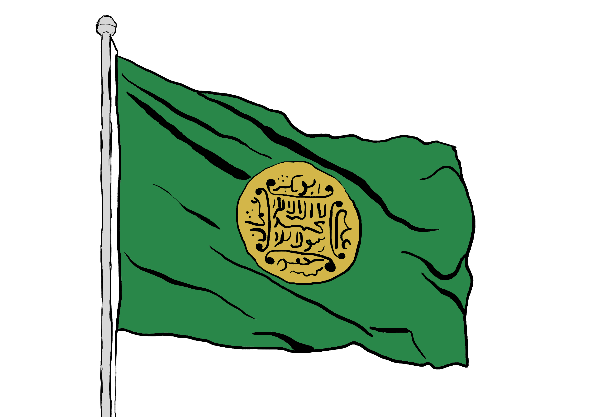

Rohingya
Race and Religion
Rohingya refers to an ethnic group who are indigenous to western Myanmar; a region known as Arakan or Rakhine state. The Rohingya are also known by their religious identity, with the majority following the religion of Islam. There is a small though notable minority of Rohingya that follow the Hindu religion. Often when referring to the ethnic and religious persecution that this community has faced over recent decades, and continues to face, the media identifies the community as “Rohingya Muslims”.
Recognition
In 1982 Myanmar enacted a Citizenship Law that officially recognised 135 ethnic groups as having been native to the nation prior to British occupation in 1824. The Rohingya were not included in this list, instead considered by the Burmese government as citizens of neighbouring Bangladesh, despite evidence that the Rohingya have been living in Arakan state for centuries. Therefore since 1982 the Rohingya have been denied citizenship and have long been known for being a stateless population.
Statelessness
Statelessness is defined under international law as the instance when an individual is "not considered as a national by any state under the operation of its law". In practice, this means the individual has no legal access to forms of identification, and thus access to education, healthcare, employment and freedom of movement.
Identity
Within the Rohingya community, the people identify as (a) a unique ethnic group, distinct from groups in Bangladesh, (b) indigenous to Arakan or Western Myanmar with a history dating back to the 7th century, and (c) entitled to nationality in Myanmar.

Arakan State
Pre-Colonial History
Arakan state is the western most region of Myanmar, with its western coast alongside the Bay of Bengal, a northern national border shared with Bangladesh, and the eastern state border marked by the Arakan mountains.
With its strategic position, protected as a region by natural landforms and with access to maritime trade routes, Arakan has maintained its sovereignty for centuries with trade relations with Western Europe, the Middle East, South Asia, China and Southeast Asia. In 1784, neighbouring Myanmar, under the Konbaung dynasty, conquered and annexed Arakan.
Colonial History
In 1824 the British occupied Myanmar in the ‘First Anglo-Burmese war’ lasting till 1826. Myanmar ultimately conceded the state of Arakan to the British, and the land and people became a part of ‘British India’. The rest of Myanmar eventually fell to British rule by 1886. By 1937, Britain was ruling Myanmar and India as two separate colonies, with Arakan considered a part of Myanmar.
Post-Colonial History
When Myanmar attained independence in 1948, Arakan was included as part of the country, with official status as a Union state granted in 1974. The state was officially renamed as Rakhine state following the 1989 government decision to formally change the country name from ‘Burma’ to Myanmar.
Name
‘Rakhine’ refers to the majority ethnic group of the western region, who are traditionally followers of Theravada Buddhism. Today, Islam is the second most practiced religion in the state, with small minorities following Christianity, Hinduism, and other religions. Rohingya are still the second largest ethnic population, with several other ethnic minorities native to the state.

Rohingya Language and Literacy
History
The Rohingya language has historically been an oral language without its own unique written format, instead adopting the alphabets of various languages that the state of Arakan has been in contact with over the centuries. As the community has spread outside of Myanmar in recent decades, access to oral tradition has changed, and so work has been done to create a new written form for the Rohingya language.
Scripts
There are currently two written scripts recognised by scholars in the community as Rohingya Fonna (Rohingya Alphabets), although awareness of these written formats are still extremely limited from both within and outside of the community.
The most recent format is Rohingyalish, developed by Mohammed Siddique Basu and in use since 1999. It uses the Latin alphabet and is also a phonetic script. It includes 28 characters with an additional 5 accented vowels.
The more commonly used and recognised format is the Hanifi Rohingya Script, originating in the 1980s by the scholar Mohammad Hanif. It is a phonetic system based on the Arabic alphabet. The Hanifi script comprises 29 consonant letters and 7 vowels with 10 unique numeral symbols. The script has been included in the Unicode Standard as of 2018.

Refugee Context
20th Century
There has been a growing refugee population of Rohingya since 1975; when thousands of Rohingya fled to neighboring Bangladesh after decades of state discrimination. Over the following years of military operations in Rohingya villages, hundreds of thousands more fled to Bangladesh. Many were repatriated to Myanmar in 1978 when the government reached a deal with Bangladesh through the UN. However these military operations and following processes of repatriation continued over the next decades, with another mass exodus in 1991 and following UN-brokered deal to send Rohingya back to Arakan state.
21st Century
In 2012 major sectarian conflict led to an emergency state declared in Myanmar and tens of thousands of Rohingya displaced while fleeing persecution. Camps for IDPs (internally displaced peoples) had to be set up and Bangladesh had a major influx of refugees. Violence and the displacement of Rohingya continued into 2013 and at this point had garnered international coverage with human rights concerns from the UN.
The most notable exodus occurred in 2017; hundreds of Rohingya villages were being destroyed and hundreds of thousands fled. The result has been a refugee population of over 1 million in Bangladesh, now host to the world’s largest refugee camp.
In 2018 a UN report attributed “genocidal intent” to the actions of the Myanmar military. The events of 2017 have since been internationally acknowledged as a genocide by mainstream media.
Today's Diaspora
A Rohingya population within Myanmar remains though many have been internally displaced to UNHCR camps of temporary shelters built around Sittwe, the capital or Arakan or Rakhine state. Today, the majority of the Rohingya refugee population live in the refugee camps of Cox's Bazar, Bangladesh.
Aside from Bangladesh, countries with the larger populations of Rohingya refugees include Saudi Arabia, India, Pakistan, Thailand, Malaysia and Indonesia. None of these countries are signatories to the 1951 Refugee Convention (a United Nations treaty that specifies the rights of refugees) therefore Rohingya in these countries often live in precarious circumstances with limited access to education and employment, and therefore little assurance of safety and stability. Host countries that Rohingya refugees have been formally resettled to include the USA, Canada, Australia, New Zealand, the UK and other parts of Europe.